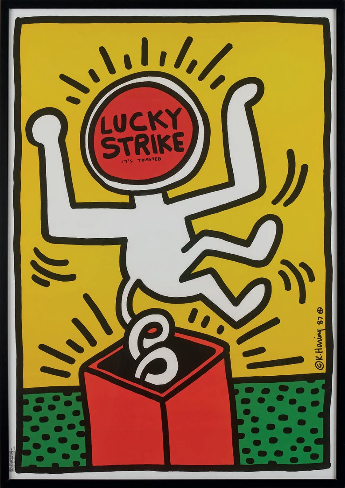

We bring to Denmark a selection of iconic Keith Haring works — editions and prints from the 1980s — from the private collection of Alessandro Della Morte, in partnership with DART Dynamic Art Museum.
After wine and agriturismo, ConsultingDK extends its commitment to art and culture as well. In partnership with Alessandro Della Morte, head of our Milan office, we bring to Copenhagen a selection of editions and prints created by Keith Haring in the 1980s, from his private collection.
The collection was previously presented to the Italian public in the exhibition "Collezioni Private. Keith Haring. Edizioni Stampe Poster degli anni Ottanta," hosted by DART Dynamic Art Museum in Milan, at via Filippo Turati 34, from March 30 to May 24, 2022.

Born in Reading, Pennsylvania, in 1958, Keith Haring became one of the most recognizable figures in 20th-century pop art.
From the New York art scene of the late 1970s, Haring developed a visual language of instantly recognizable signs and figures, able to speak to a universal audience.
Starting in 1982, Haring elevated the poster to a true work of art, creating over a hundred of them throughout his career for exhibitions, concerts and social causes.
Haring put his art in the service of major social and political causes, from the defense of civil rights to AIDS awareness, founding the Keith Haring Foundation.
His last major public work, the Tuttomondo mural, is located in Pisa. From the 1980s to today, his imagery has become a true global social and cultural phenomenon.
The works on display are part of the private collection of Alessandro Della Morte, today head of ConsultingDK's Milan office, and were curated by the Curatorial Committee of the Centro Studi DART Dynamic Art Museum.
Thanks to ConsultingDK's network between Italy and Denmark, this same cultural experience is now being brought to the Scandinavian public, expanding our commitment beyond food and wine.
Following the success of the Giro (dei Vini e del cibo) d'Italia and the Agrifarm Tour, ConsultingDK is expanding its cultural offering by bringing Italian art and internationally significant private collections to Scandinavia, in line with the strong curiosity Danish audiences have for Italian culture.
Contact us to learn more about the event or to propose a cultural partnership in Denmark.